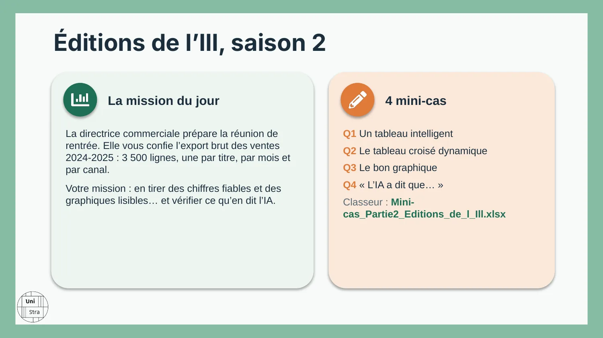
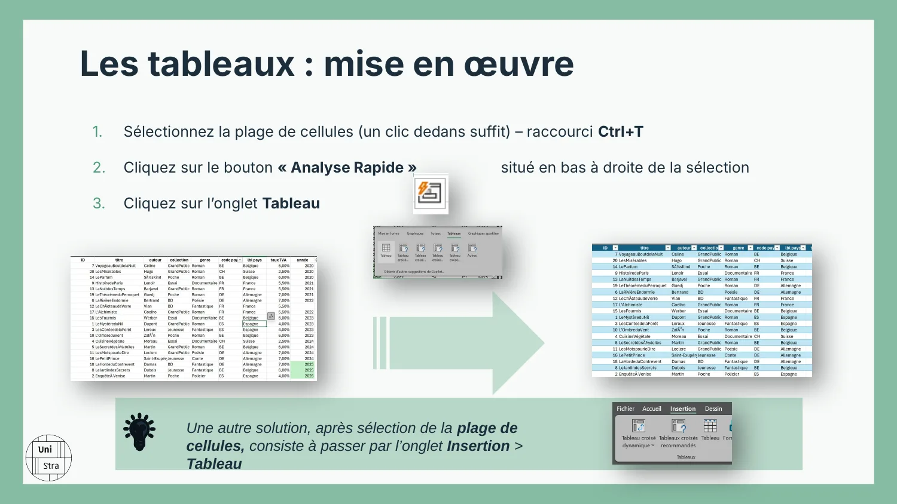
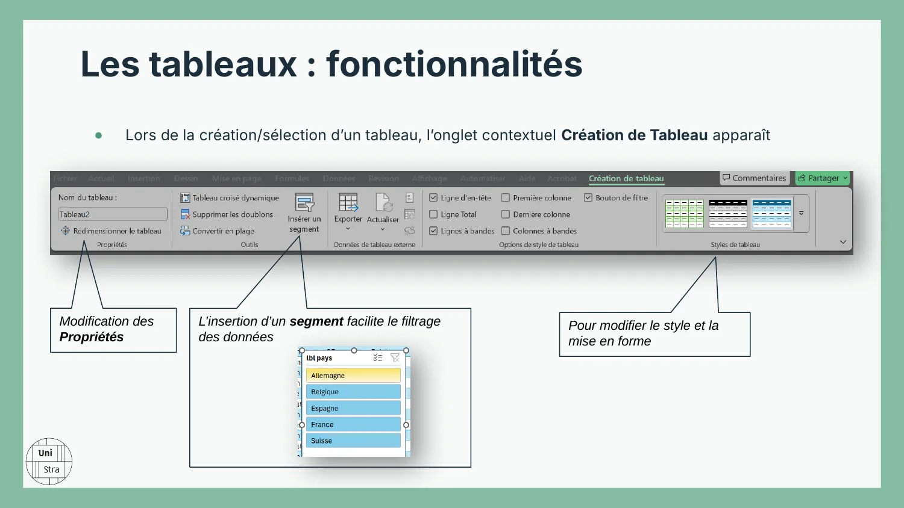
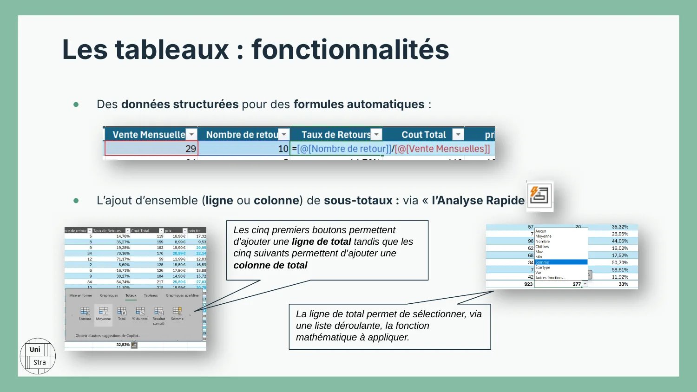
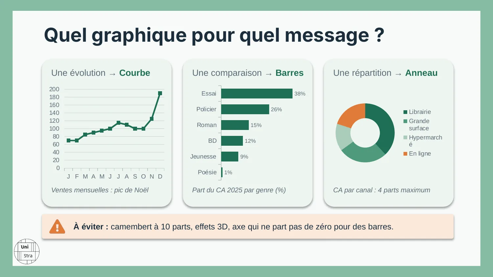
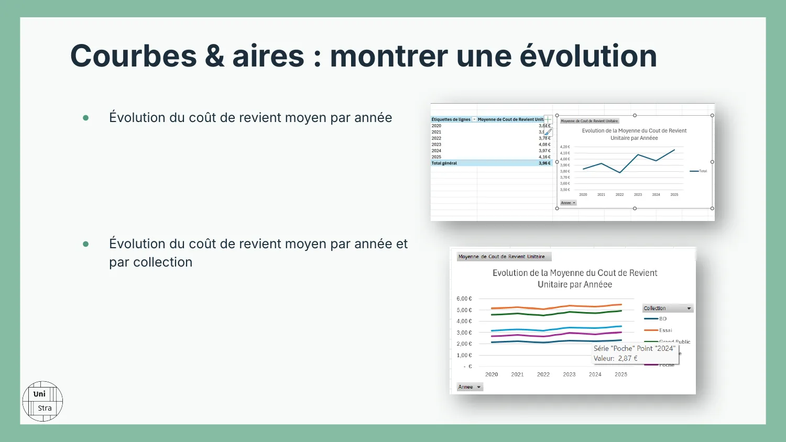
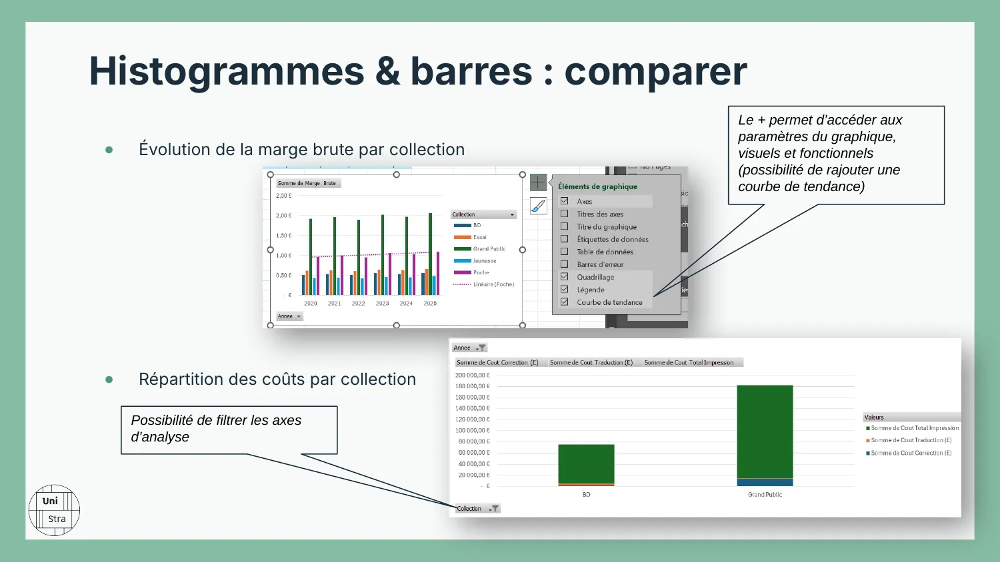
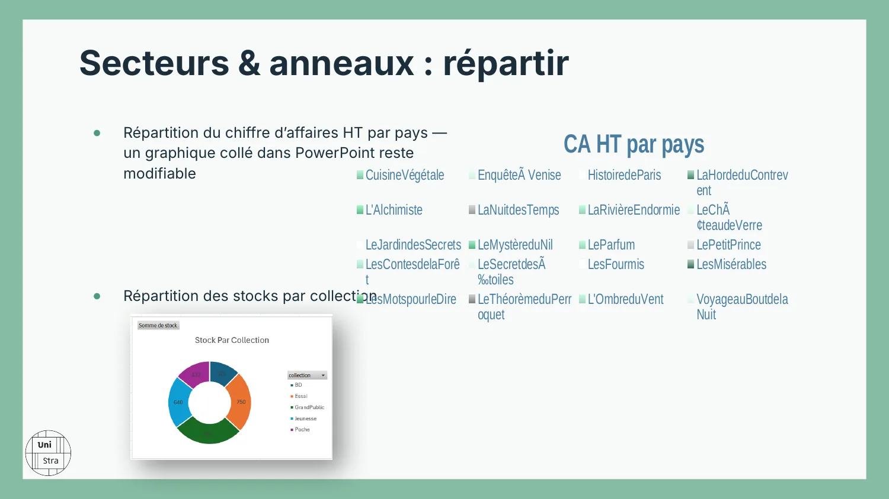
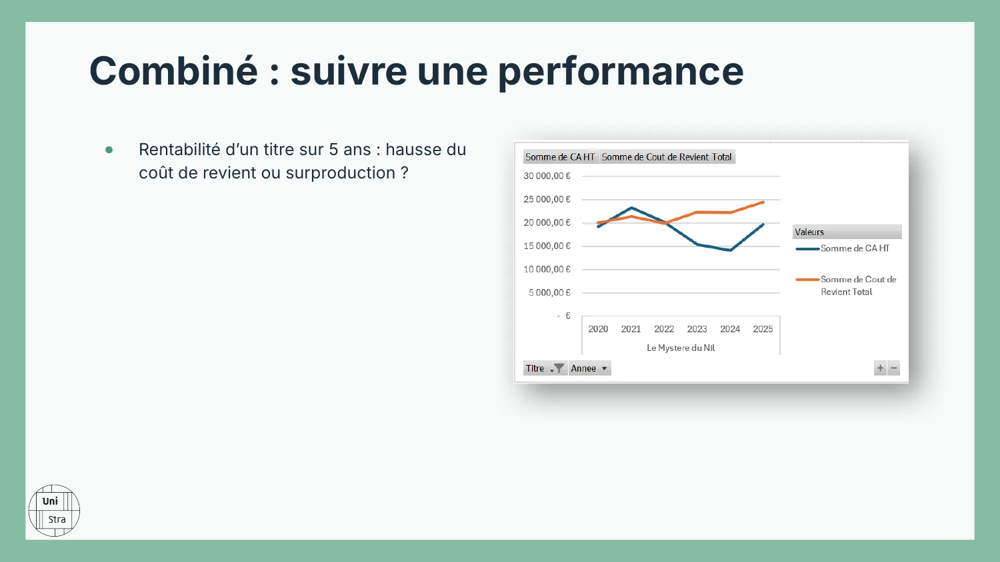

Introduction : la mission
1 Master Édition Module Excel 
2 Éditions de l’Ill, saison 2 3 Notre programme I · Les tableaux de données
4 Les tableaux de données ![Des tableaux « intelligents » — Définition : Un tableau est une plage de données structurée que Excel reconnaît comme un objet unique, avec des fonctionnalités avancées (filtres, formules automatiques, mise en forme dynamique). Il facilite la gestion et l’analyse de ces données. — Fonctionnalité ; Bénéfice ; Exemple — En-têtes figés ; Les titres de colonnes restent visibles lors du défilement. ; Faire défiler 3 500 lignes de ventes sans perdre les en-têtes. — Filtres intégrés ; Filtres automatiques (comme Données > Filtre, mais plus intuitifs). ; Filtrer les ventes par genre ou par canal. — Formules automatiques ; Les formules s’étendent automatiquement aux nouvelles lignes. ; =SOMME([Ventes]) se recalcule si une ligne est ajoutée. — Mise en forme dynamique ; Alternance de couleurs (zébré) et styles cohérents. ; Lignes grisées pour une meilleure lisibilité. — Références structurées ; Noms de colonnes utilisables dans les formules (ex: [Prix] au lieu de B2:B100). ; =MOYENNE([Marge]) au lieu de =MOYENNE(D2:D100). — Lignes de total ; Ajout automatique d’une ligne de sous-totaux (somme, moyenne, etc.). ; Somme des ventes par genre. — Actualisation dynamique ; Les calculs et formats se mettent à jour sans action manuelle. ; Ajout d’une nouvelle ligne de données.](assets/slides/partie2/05.webp) 5 Des tableaux « intelligents »
5 Des tableaux « intelligents » 
6 Les tableaux : mise en œuvre 
7 Les tableaux : fonctionnalités 
8 Les tableaux : fonctionnalités ![Q1 · Un tableau intelligent — À vous · 5 min — La situation — L’export des ventes est une simple plage de cellules. Transformez-le en tableau pour qu’il travaille pour vous. — Onglet : Ventes — 1 — Cliquez dans les données, Ctrl+T, puis nommez le tableau T_Ventes (onglet Création de tableau). — 2 — Ajoutez une colonne « CA HT » (exemplaires × prix) : observez comment elle se remplit seule ! — 3 — Cochez « Ligne des totaux » : total des exemplaires et du CA. — 4 — Insérez un segment « Canal » et cliquez sur « Vente en ligne ».](assets/slides/partie2/09.webp) 9 Q1 · Un tableau intelligent À vous · 5 min
9 Q1 · Un tableau intelligent À vous · 5 minIII · Les graphiques
17 Les graphiques ![Les graphiques : définition & intérêts — Définition : Un graphique est une représentation visuelle de données, transformant des chiffres en formes géométriques (courbes, barres, secteurs) pour faciliter la compréhension et mettre en évidence des tendances, comparaisons ou anomalies. Intérêts : — Besoin ; Solution Graphique ; Exemple Concret — Visualiser des tendances ; Courbes, aires ; Évolution des coûts unitaires de 2020 à 2025. — Comparer des catégories ; Histogrammes, barres empilées ; Comparaison des marges par collection (Grand Public vs Poche). — Analyser des parts relatives ; Camemberts, anneaux ; Répartition du CA par canal (librairie, grande surface, en ligne…). — Identifier des anomalies ; Nuages de points, graphiques en bulles ; Livres avec des coûts unitaires anormalement élevés. — Suivre des performances ; Graphiques en cascades, jauges ; Évolution de la rentabilité d’un livre sur 5 ans. — Présenter des données ; Graphiques combinés (courbes + histogrammes) ; Coûts vs marges sur un même graphique.](assets/slides/partie2/18.webp) 18 Les graphiques : définition & intérêts
18 Les graphiques : définition & intérêts 
19 Quel graphique pour quel message ? ![Les graphiques : mise en œuvre — Plusieurs méthodes existent pour générer un graphique : Via l’Analyse Rapide : Sélectionnez les cellules contenant les données à représenter en veillant à ce que les cellules sélectionnées soient adjacentes, puis cliquez sur et sélectionnez Graphiques Via l’onglet Insertion – Graphiques, après avoir sélectionné les cellules. Si elles ne sont pas adjacentes, utilisez CTRL tout en sélectionnant les cellules souhaitées. Depuis un tableau croisé dynamique pour une mise à jour automatique des données. Cliquez sur le TCD, puis via contextuel Analyse du TCD cliquez Graphique Croisé Dynamique](assets/slides/partie2/20.webp) 20 Les graphiques : mise en œuvre
20 Les graphiques : mise en œuvre 
21 Courbes & aires : montrer une évolution 
22 Histogrammes & barres : comparer 
23 Secteurs & anneaux : répartir 
24 Combiné : suivre une performance ![Q3 · Le bon graphique — À vous · 6 min — La situation — Trois messages pour la réunion de rentrée. À vous de choisir le graphique adapté à chacun, puis de le soigner. — Onglet : Ventes (+ TCD) — 1 — TCD : Mois en lignes, CA en valeurs, puis Graphique croisé dynamique › Courbe. — 2 — Quel mois pèse le plus ? Ajoutez un titre explicite. — 3 — Nouveau TCD : CA par Canal pour 2025 › anneau, étiquettes en %. — 4 — Genres en barres horizontales triées : le message saute-t-il aux yeux ? — Bonus : clic droit › Enregistrer comme modèle pour réutiliser votre style de graphique.](assets/slides/partie2/25.webp) 25 Q3 · Le bon graphique À vous · 6 min
25 Q3 · Le bon graphique À vous · 6 minIV · Vérifier une synthèse produite par une IA
![L’IA a dit que… : vérifier avec Excel — 1. Demander — Collez l’export dans un assistant IA et demandez une synthèse : rapide, bien rédigé… et parfois faux. — 2. Recompter — Un TCD de 30 secondes recalcule chaque chiffre à partir des données sources. — 3. Décider — Vous ne présentez que ce que vous avez vérifié. C’est votre nom sur la note, pas celui de l’IA. — Pourquoi ça arrive : un modèle de langage prédit du texte plausible ; il ne fait pas toujours le calcul. Les erreurs sont typiques sur les pourcentages, les évolutions et les totaux.](assets/slides/partie2/26.webp) 26 L’IA a dit que… : vérifier avec Excel
26 L’IA a dit que… : vérifier avec Excel ![À retenir de la partie II — Tableau (Ctrl+T) — Formules et mise en forme qui s’étendent seules, ligne de total, segments. — Tableau croisé dynamique — Lignes, colonnes, valeurs, filtres : résumer 3 500 lignes en 4 glisser-déposer. — Graphique — Un message = un graphique. Titre explicite, pas de 3D. — Esprit critique — Toute synthèse, humaine ou IA, se vérifie dans les données sources. — Raccourcis : Ctrl+T tableau · Alt+F5 actualiser un TCD · Alt+F1 graphique instantané F11 graphique sur une nouvelle feuille · Ctrl+Maj+L filtre · Ctrl+Z annuler](assets/slides/partie2/27.webp) 27 À retenir de la partie II
27 À retenir de la partie II


![Les TCD : définition & intérêts — Définition : Un tableau croisé dynamique est un outil d'analyse interactif dans Excel qui permet de résumer, regrouper et analyser de grandes quantités de données en quelques clics. Il transforme des données brutes en synthèses personnalisables, sans modifier la source originale Intérêts : — Besoins ; Solution Apportée ; Exemple Concret — Analyser des données en masse ; Résumer des milliers de lignes en quelques lignes clés (moyennes, sommes, etc.). ; Calculer la marge moyenne par collection sur 5 ans en 2 clics. — Comparer des segments ; Croiser des dimensions (ex. genre × année × canal) pour identifier des tendances. ; Comparer les ventes par canal et par année : la librairie indépendante progresse-t-elle ? — Gagner du temps ; Éviter les formules complexes et les copier-coller manuels. ; Remplacer 50 lignes de SOMME.SI.ENS par un simple glissé-déposé. — Explorer des données ; Tester des hypothèses rapidement (ex: impact d’une hausse des coûts). ; Simuler l’effet d’une augmentation de 10% des coûts d’impression sur les marges.](assets/slides/partie2/11.webp)
![Les TCD : principales fonctionnalités — Fonctionnalité ; Description ; Exemple d'Utilisation — Regroupement ; Fusionner des données par catégories (ex: années, collections, pays). ; Regrouper les années 2020-2025 pour analyser une période. — Filtres interactifs ; Filtrer les données avec des segments (boutons cliquables) (slicers en anglais). ; Afficher uniquement les livres de la collection "Grand Public" en un clic. — Calculs automatiques ; Somme, moyenne, min/max, comptage, etc., sans formule. ; Calculer le prix moyen par collection. — Mise à jour dynamique ; Rafraîchissement automatique si les données sources changent. ; Actualiser les marges après une modification des coûts. — Graphiques associés ; Générer des graphiques croisés dynamiques (histogrammes, courbes) en 1 clic. ; Visualiser l’évolution des ventes par année avec un graphique en courbes. — Champs calculés ; Ajouter des colonnes personnalisées (ex: marge en %). ; Créer un champ "Marge %" = (Prix_Vente - Coût) / Prix_Vente. — Valeurs en % ; Afficher des parts relatives (ex: % du total). ; Voir la répartition des ventes par collection (ex: 30% pour "Grand Public").](assets/slides/partie2/12.webp)

![Les TCD : mise en œuvre 2/3 — Pour placer un champ dans le tableau, cliquez sur le nom du champ dans la section Champ et faites-le glisser vers la zone correspondante de la section Zones: Pour filtrer le tableau en fonction du champ ajouté dans cette zone Pour afficher les champs sous forme de lignes. Une ligne de position inférieure est imbriquée dans la ligne affichée immédiatement au-dessus d’elle. Pour afficher les champs sous forme de colonnes. Pour que les valeurs de ce champ soient utilisées pour remplir les différentes cellules du TCD. — La section Champ affiche la liste des champs. — La section Zones permet de positionner les champs dans le tableau — Permet de rechercher un champ — A — B — C — D — Permet de filtrer le contenu du champ (Pays) — Permet de filtrer le contenu du champ (Collection et Genre)](assets/slides/partie2/14.webp)
![Les TCD : mise en œuvre 3/3 — Sélectionnez le calcul à réaliser — Pour modifier la fonction de synthèse ou le calcul personnalisé d’un champ de la zone Valeurs, cliquez sur le nom du champ concerné dans cette zone puis cliquez sur l’option Paramètres des champs de valeurs. Pour insérer un champ calculé : Onglet Analyse du TCD – groupe Calculs – bouton Champs, éléments et Jeux – Option Champ calculé — Personnalisation du Nom — Saisissez le nom du nouveau champ calculé — Tapez la formule de votre choix : sélectionnez le champ concerné puis cliquez sur le bouton Insérer un champ](assets/slides/partie2/15.webp)
![Q2 · Le tableau croisé dynamique — À vous · 6 min — La situation — La directrice veut savoir quel genre fait vivre la maison, et si la librairie indépendante a les mêmes goûts que le reste du marché. — Onglet : Ventes (+ nouvelle feuille) — 1 — Insertion › Tableau croisé dynamique à partir de T_Ventes (nouvelle feuille). — 2 — Genre en Lignes, Année en Colonnes, CA HT en Valeurs (Somme). — 3 — Paramètres des champs de valeurs › Afficher les valeurs › % du total de la colonne. — 4 — Ajoutez un segment Canal : quel genre domine en librairie indépendante ? — Bonus : ajoutez un champ calculé donnant le prix moyen de chaque genre.](assets/slides/partie2/16.webp)